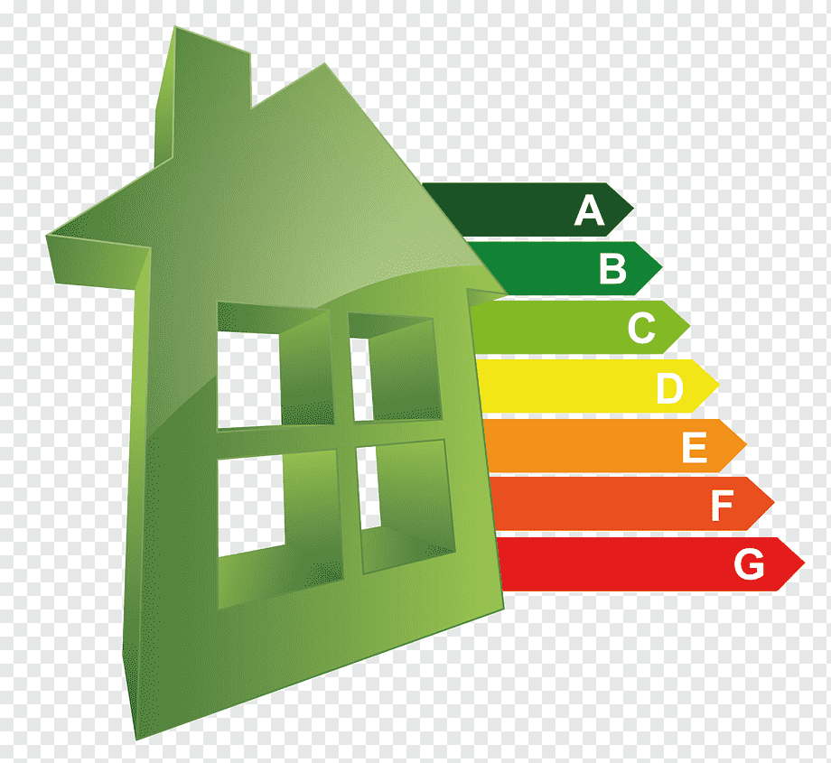

Types of Energy in HouseHolds
- Space Heating
- Water Heating
- Electric Appliances

Introduction to Household Consumption
A and B rated households consumed 43% less electricity per square metre in 2023 than those rated D and E
Key Finding
The residential sector accounts for almost one quarter of the energy used in Ireland. It is also responsible for 15.5% of the energy-related CO2 emissions. The fuel shares are relatively stable, with a gradual increase in the share of electricity, gas and of renewables and a continuing though gradual decline in coal, peat and oil use. It is notable that electricity consumption over the period was at its highest in 2022.
Total electricity consumption had peaked in 2008, having more than doubled since 1990. It reduced between 2008 and 2014, but since grew yearly - reaching a new peak in 2022. There is evidence that the growth of large household appliances is levelling off. At the same time, there has been an increase in appliance efficiency. Additionally, there was an increase in electricity prices over the period.